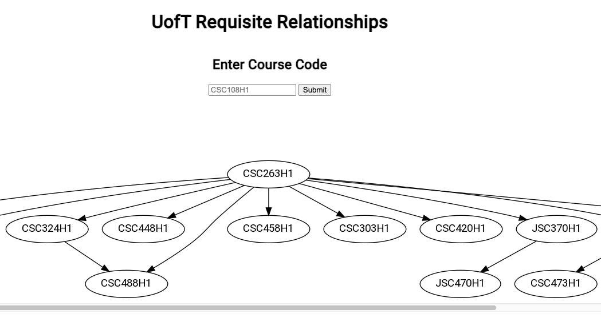
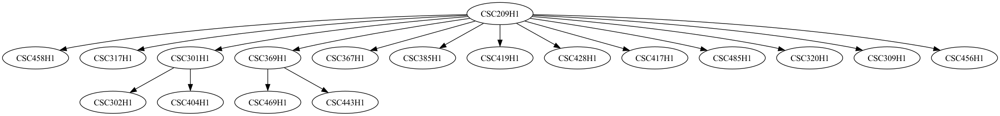

Coursify - Course Requisite Relationships
Course Requisite Relationships is a tool aimed at enhancing the academic planning experience for students. With the primary focus on course planning,
it enables the visualization of course requisites and prerequisites in a simple and intuitive manner with directed graphs and course codes as nodes. It caters to the
unique needs of visual academic planning that current university planning tools don't fulfill.
The web application is built using Python, Flask, and jQuery on the server-side, with
NetworkX and Graphviz libraries for the generation and rendering of course graphs which utilize data scraped with Beautiful Soup. The client-side uses HTML, CSS, and Javascript to create an interactive and
user-friendly interface. The website is deployed to and hosted with PythonAnywhere.
You can view the website here.

